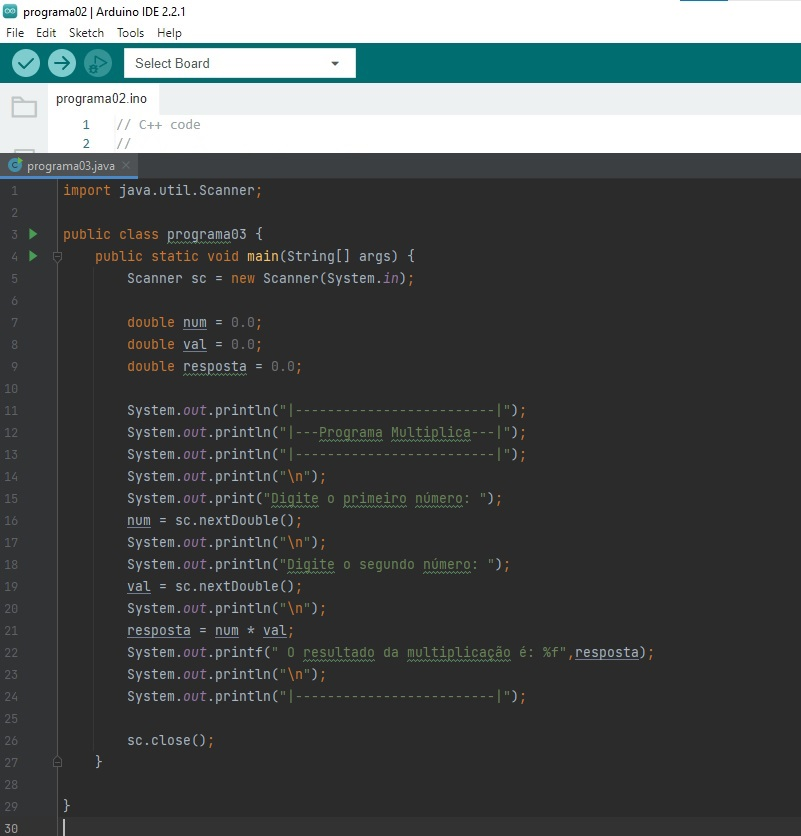

<!DOCTYPE html>
<html lang="pt-BR">
<head>
    <meta charset="UTF-8">
    <meta name="viewport" content="width=device-width, initial-scale=1.0">
    <title>Java</title>
</head>
<body>
    <link rel="stylesheet" href="style.css">
</body>
</html>
<nav>
    <a href="./index.html">-Página principal-</a>
    <a href="./Tinkercad.html">Tinkercad-</a>
    <a href="./c++.html">Pagina C++-</a>
    <a href="./java.html">Java-</a>
</nav>
<h1>Descrição da lingua de programação em Java</h1>
<p>O Java é uma linguagem de programação popular orientada a objetos e multiplataforma. O Java pode ser usado como uma plataforma por meio das máquinas virtuais Java (JVMs), que podem ser instaladas na maioria dos computadores e dispositivos móveis.
    Java é uma linguagem de programação de propósito geral, orientada a objetos, de nível alto, desenvolvida por James Gosling e Mike Sheridan na Sun Microsystems em 1991, sendo lançada oficialmente em 1995. A principal característica do Java é a portabilidade, possibilitada pelo conceito de "write once, run anywhere" (escreva uma vez, execute em qualquer lugar). Isso significa que, após escrever o código, ele pode ser executado em diferentes plataformas, desde que a máquina virtual Java (JVM) esteja disponível.
</p>
<br>
<p> print de tela de um Código de programação em java</p>
<div>
    
</div>
<br>
<p>código em Java</p>
<p>
    mport java.util.Scanner;
    <br>
<br>
public class programa03 {
    <br>
    public static void main(String[] args) {
        <br>
        Scanner sc = new Scanner(System.in);
        <br>
<br>
        double num = 0.0;
        <br>
        double val = 0.0;
        <br>
        double resposta = 0.0;
        <br>
<br>
        System.out.println("|-------------------------|");
        <br>
        System.out.println("|---Programa Multiplica---|");
        <br>
        System.out.println("|-------------------------|");
        <br>
        System.out.println("\n");
        <br>
        System.out.print("Digite o primeiro número: ");
        <br>
        num = sc.nextDouble();
        <br>
        System.out.println("\n");
        <br>
        System.out.println("Digite o segundo número: ");
        <br>
        val = sc.nextDouble();
        <br>
        System.out.println("\n");
        <br>
        resposta = num * val;
        <br>
        System.out.printf(" O resultado da multiplicação é: %f",resposta);
        <br>
        System.out.println("\n");
        <br>
        System.out.println("|-------------------------|");
        <br>
<br>
<br>
        sc.close();
    }
</p>
